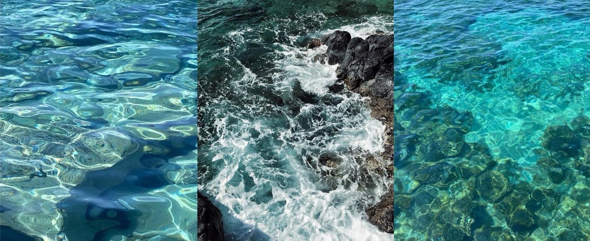
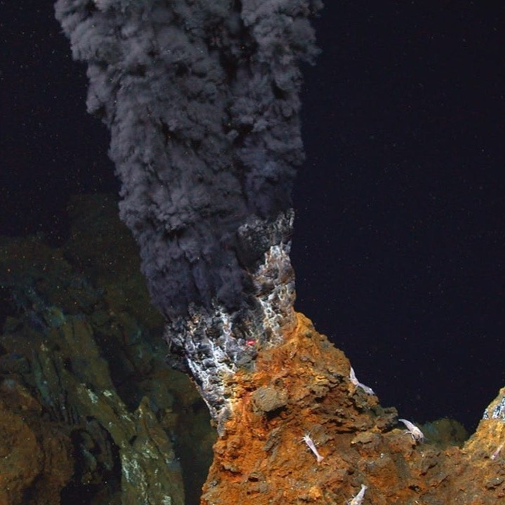
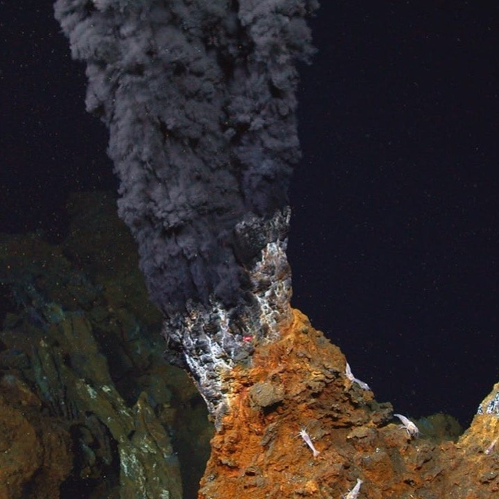

Explore the Depths of Marine Geology
Delve into the geological processes and features of the ocean
and explore the latest research and discoveries in
marine geology to gain a deeper understanding of these
fascinating phenomena.
What Is Marine Geology?

Marine geology is the study of the structure and composition of the ocean floor. It involves
examining
underwater geological features such as seafloor spreading, volcanic activity, and hydrothermal
vents.
This field of science provides insights into plate tectonics, sediment processes, and ocean basin
formation.
Marine geologists use techniques like seismic surveying and submersible exploration to collect data.
By
studying marine geology, scientists gain insights into past climate changes, natural hazards, and
the
evolution of marine life.
Importance
Marine geology is crucial for understanding the Earth's geological history and plate tectonics,
providing
insights into natural hazards like tsunamis and earthquakes. It helps identify underwater mineral
resources
and informs environmental conservation efforts. This field also aids in predicting and mitigating the
impacts
of climate change on marine ecosystems.
Marine Geology: Key Areas
 

Frequently Asked Questions
What tools and techniques are used in marine
geology research?
Marine geologists use tools such as sonar mapping,
sediment coring, remotely operated vehicles (ROVs),
and chemical analysis to study the ocean floor and
its processes.
How does marine geology contribute to natural
hazard assessment?
By studying the geology of the ocean floor, marine
geologists can assess the risk of tsunamis,
earthquakes, and underwater landslides, contributing
to hazard mitigation efforts.
How does climate change affect marine
geology?
Climate change can alter sea levels, ocean
temperatures, and sedimentation rates, impacting
coastal erosion, marine ecosystems, and geological
processes.